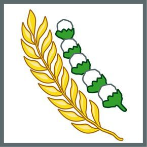

PANCASILA DAN SDGs 10
BERKURANGNYA KESENJANGAN
Pancasila merupakan dasar negara sekaligus pedoman bagi masyarakat Indonesia dalam menjalankan kehidupan bermasyarakat, berbangsa, dan bernegara. Nilai-nilai yang terkandung di dalam Pancasila memiliki hubungan erat dengan tujuan pembangunan berkelanjutan atau Sustainable Development Goals (SDGs), khususnya tujuan nomor 10, yaitu Berkurangnya Kesenjangan.
APA ITU SDGs 10?
SDGs 10 merupakan salah satu dari 17 tujuan global yang ditetapkan oleh Perserikatan Bangsa-Bangsa (PBB) dalam upaya menciptakan kehidupan yang lebih baik dan berkelanjutan bagi seluruh masyarakat dunia. Tujuan utama SDGs 10 adalah mengurangi ketimpangan pendapatan, kesenjangan ekonomi, serta perbedaan akses terhadap fasilitas dan tempat tinggal yang layak, baik di dalam maupun antarnegara.
Kesenjangan dapat terjadi ketika sebagian masyarakat memiliki kesempatan yang lebih besar untuk memperoleh pendidikan, pekerjaan, pelayanan kesehatan, dan fasilitas umum, sedangkan masyarakat lainnya masih mengalami kesulitan untuk mendapatkan kebutuhan tersebut. Oleh karena itu, SDGs 10 mendorong terciptanya kesempatan yang lebih merata agar setiap orang dapat hidup dengan layak, aman, dan sejahtera.
SDGs 10 juga mengajak setiap negara untuk mengurangi diskriminasi, meningkatkan perlindungan bagi kelompok rentan, serta memastikan bahwa seluruh masyarakat dapat berpartisipasi dalam kehidupan sosial, ekonomi, dan politik tanpa dibedakan berdasarkan latar belakangnya.
NILAI PANCASILA YANG TERKANDUNG DALAM SDGs 10
Dalam SDGs nomor 10, terdapat dua sila Pancasila yang memiliki hubungan sangat erat dengan upaya mengurangi kesenjangan, yaitu sila ke-2 dan sila ke-5.
SILA KE-2
KEMANUSIAAN YANG ADIL DAN BERADAB
Nilai yang Terkandung
Sila kedua mengandung nilai kemanusiaan, persamaan derajat, penghormatan terhadap hak asasi manusia, serta sikap tenggang rasa. Sila ini mengajarkan bahwa setiap manusia memiliki harkat dan martabat yang sama sehingga harus diperlakukan secara adil dan beradab, tanpa membedakan suku, agama, ras, budaya, maupun kondisi sosial dan ekonominya.
Lambang rantai pada sila kedua menggambarkan hubungan antarmanusia yang saling berkaitan, membutuhkan, dan membantu satu sama lain. Hal tersebut menunjukkan bahwa manusia tidak dapat hidup sendiri dan perlu saling menghargai serta peduli terhadap sesamanya.
Hubungannya dengan SDGs 10
Nilai kemanusiaan pada sila kedua berhubungan dengan SDGs 10 karena setiap orang berhak mendapatkan perlakuan yang adil dan kesempatan yang sama dalam kehidupan. Masyarakat yang kurang mampu, penyandang disabilitas, serta kelompok rentan lainnya tetap memiliki hak untuk memperoleh pendidikan, pelayanan kesehatan, tempat tinggal, dan fasilitas umum yang layak.
Contohnya, warga yang tinggal di kawasan permukiman padat atau di sekitar jalur rel kereta api tetap harus dihormati hak dan martabatnya. Mereka tidak boleh dipandang rendah atau dikucilkan hanya karena kondisi ekonomi dan tempat tinggalnya. Pemerintah dan masyarakat perlu bekerja sama agar mereka memperoleh akses terhadap lingkungan yang lebih aman dan layak.
Dengan menerapkan sila kedua, masyarakat dapat membangun sikap saling menghormati, membantu orang yang membutuhkan, serta menghindari diskriminasi. Hal ini sejalan dengan tujuan SDGs 10 untuk menciptakan kehidupan yang lebih inklusif dan mengurangi kesenjangan sosial.
SILA KE-5
KEADILAN SOSIAL BAGI SELURUH RAKYAT INDONESIA

Nilai yang Terkandung
Sila kelima mengandung nilai keadilan sosial, pemerataan kesejahteraan, keseimbangan antara hak dan kewajiban, serta kepedulian terhadap kepentingan bersama. Sila ini mengajarkan bahwa seluruh rakyat Indonesia berhak memperoleh kehidupan yang layak dan mendapatkan kesempatan yang adil untuk meningkatkan kesejahteraannya.
Lambang padi dan kapas menggambarkan kebutuhan dasar manusia, yaitu pangan dan sandang. Kedua lambang tersebut mencerminkan harapan agar seluruh masyarakat dapat memenuhi kebutuhan hidupnya dan merasakan kesejahteraan secara merata.
Hubungannya dengan SDGs 10
Nilai keadilan sosial pada sila kelima berhubungan langsung dengan tujuan SDGs 10, yaitu mengurangi kesenjangan ekonomi dan sosial. Keadilan tidak hanya berarti memperlakukan semua orang dengan baik, tetapi juga memastikan bahwa setiap orang memiliki kesempatan untuk memperoleh kebutuhan dasar dan fasilitas yang layak.
Contohnya adalah pemerataan pembangunan fasilitas pendidikan, rumah sakit, transportasi, dan tempat tinggal yang layak. Fasilitas tersebut seharusnya tidak hanya tersedia di kota besar, tetapi juga dapat dijangkau oleh masyarakat yang tinggal di daerah terpencil maupun wilayah yang masih mengalami keterbatasan pembangunan.
Selain itu, pemerintah dapat membantu masyarakat berpenghasilan rendah melalui program perlindungan sosial, bantuan pendidikan, pelatihan keterampilan, dan penciptaan lapangan pekerjaan. Dengan demikian, masyarakat memiliki kesempatan yang lebih besar untuk meningkatkan taraf hidupnya.
Penerapan sila kelima membantu menciptakan keseimbangan dalam kehidupan masyarakat. Apabila pembangunan dan kesejahteraan dapat dirasakan secara lebih merata, kesenjangan antara masyarakat mampu dan kurang mampu juga dapat dikurangi.
PENERAPAN PANCASILA DALAM KERJA SAMA ANTARNEGARA
Nilai-nilai Pancasila tidak hanya diterapkan dalam kehidupan masyarakat Indonesia, tetapi juga dapat menjadi pedoman ketika Indonesia menjalin kerja sama dengan negara lain. Dalam upaya mendukung SDGs nomor 10, penerapan nilai kemanusiaan, persatuan, musyawarah, dan keadilan sangat diperlukan agar kerja sama dapat memberikan manfaat bagi semua pihak.
1. Bagaimana penerapan nilai kemanusiaan dalam kerja sama tersebut?
Penerapan nilai kemanusiaan dalam kerja sama antarnegara dapat dilakukan dengan menjadikan kesejahteraan dan martabat manusia sebagai salah satu prioritas utama. Setiap negara perlu memperhatikan kebutuhan masyarakat, terutama kelompok yang rentan dan berpenghasilan rendah. Bantuan serta program pembangunan seharusnya diberikan berdasarkan kebutuhan masyarakat, bukan berdasarkan latar belakang sosial, ekonomi, maupun asal negaranya.
Contohnya adalah kerja sama Indonesia dengan Jerman melalui GIZ dalam mendukung program perlindungan sosial dan pembangunan yang inklusif. Melalui kerja sama tersebut, perhatian diberikan kepada masyarakat yang membutuhkan agar mereka memiliki akses yang lebih baik terhadap pelayanan dasar dan kesempatan untuk meningkatkan kesejahteraannya.
Hal ini mencerminkan sila kedua Pancasila karena kerja sama dilakukan dengan menghargai hak setiap manusia dan tidak membeda-bedakan masyarakat berdasarkan kondisi ekonominya. Dengan begitu, kerja sama antarnegara tidak hanya berfokus pada keuntungan negara, tetapi juga memperhatikan kehidupan dan kesejahteraan manusia.
2. Bagaimana cara menghargai perbedaan dan menjaga persatuan antarnegara?
Menghargai perbedaan dalam kerja sama antarnegara dapat dilakukan dengan menghormati kondisi sosial, ekonomi, budaya, serta kebijakan yang berlaku di setiap negara. Setiap negara memiliki kemampuan, sumber daya, dan permasalahan yang berbeda. Oleh karena itu, negara-negara yang bekerja sama perlu memahami perbedaan tersebut dan tidak memaksakan kepentingannya sendiri kepada negara lain.
Contohnya dapat dilihat dalam kerja sama ASEAN dan G20. Negara-negara yang terlibat memiliki tingkat perkembangan ekonomi dan kondisi masyarakat yang beragam. Meskipun demikian, mereka tetap dapat bekerja sama karena memiliki tujuan bersama, seperti meningkatkan kesejahteraan, mengurangi kemiskinan, dan mendorong pembangunan yang lebih merata.
Setiap negara juga dapat saling bertukar pengalaman, pengetahuan, dan kebijakan untuk mencari solusi terhadap permasalahan yang dihadapi. Sikap saling menghormati dan terbuka terhadap perbedaan tersebut mencerminkan nilai persatuan dan toleransi. Dengan demikian, hubungan antarnegara dapat tetap terjaga meskipun terdapat perbedaan kepentingan dan keadaan.
3. Mengapa musyawarah dan kesepakatan penting dalam kerja sama?
Musyawarah dan kesepakatan sangat penting karena setiap negara memiliki kebutuhan dan permasalahan yang berbeda. Melalui musyawarah, setiap negara memperoleh kesempatan untuk menyampaikan pendapat, aspirasi, serta tantangan yang sedang dihadapi. Dengan begitu, keputusan yang diambil tidak hanya menguntungkan satu pihak, tetapi juga mempertimbangkan kepentingan negara-negara lainnya.
Dalam kerja sama seperti ASEAN dan G20, negara-negara anggota melakukan pertemuan dan diskusi untuk membicarakan berbagai permasalahan global, termasuk ketimpangan ekonomi, kemiskinan, pembangunan, dan perlindungan sosial. Hasil pembahasan tersebut dapat menjadi dasar untuk menentukan program dan kesepakatan bersama.
Musyawarah juga membantu mencegah terjadinya kesalahpahaman dan ketidakadilan dalam pelaksanaan kerja sama. Setiap keputusan perlu mempertimbangkan kondisi negara yang terlibat agar program yang dijalankan sesuai dengan kebutuhan masyarakat. Hal ini mencerminkan sila keempat Pancasila, yaitu mengutamakan musyawarah untuk mencapai kesepakatan bersama.
4. Bagaimana mewujudkan keadilan agar kerja sama memberikan manfaat bagi semua negara?
Keadilan dalam kerja sama antarnegara dapat diwujudkan dengan membagi peran dan tanggung jawab secara seimbang sesuai dengan kemampuan serta kebutuhan masing-masing negara. Setiap negara harus memperoleh kesempatan untuk menyampaikan kepentingannya dan ikut merasakan manfaat dari program kerja sama yang dilaksanakan.
Negara yang memiliki kemampuan ekonomi dan teknologi lebih besar dapat memberikan dukungan berupa pendanaan, pengetahuan, maupun bantuan teknis. Sementara itu, negara berkembang seperti Indonesia dapat berperan aktif dalam menjalankan program pembangunan yang sesuai dengan kebutuhan masyarakatnya. Pembagian peran tersebut perlu dilakukan melalui kesepakatan yang adil dan saling menguntungkan.
Contohnya adalah kerja sama pembangunan yang memberikan dukungan terhadap pendidikan, perlindungan sosial, fasilitas kesehatan, dan infrastruktur. Program tersebut diharapkan dapat meningkatkan kesempatan masyarakat untuk memperoleh kehidupan yang lebih baik.
Dengan menerapkan prinsip keadilan, kerja sama antarnegara tidak hanya memberikan keuntungan bagi negara yang lebih maju, tetapi juga membantu negara berkembang meningkatkan kesejahteraan rakyatnya. Hal ini sesuai dengan sila kelima Pancasila, yaitu Keadilan Sosial bagi Seluruh Rakyat Indonesia.